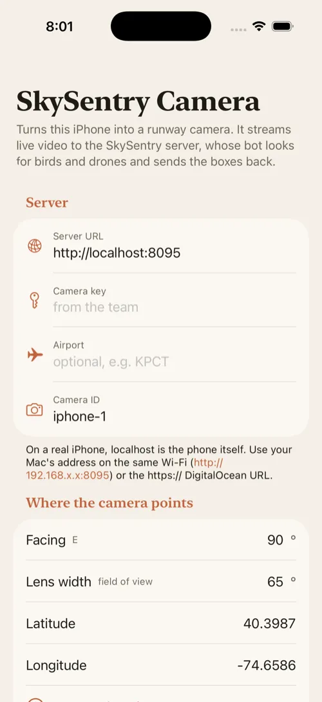
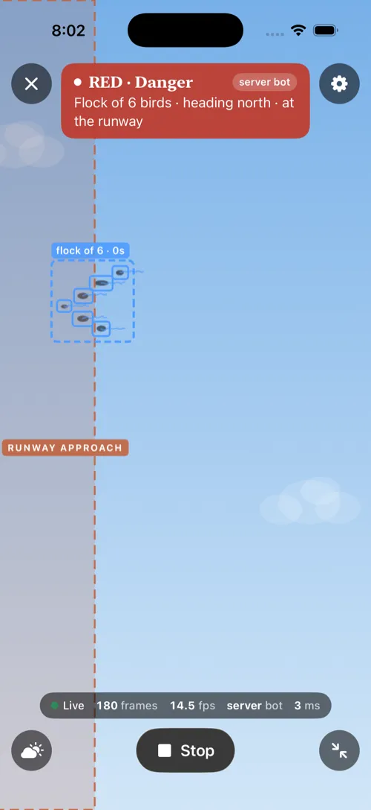

Atharv SharmaAtharv Sharma
Atharv SharmaAtharv SharmaHi! I'm a student and I like making things you can actually try. Most of the stuff below runs in your browser, so click around.
Code is on GitHub: github.com/BurTheBear
Right now I'm working on a secret project called Neuropolis. More on that when it's ready.
A crypto research dashboard. It streams live Binance prices into candlestick charts with the usual indicators (EMA, VWAP, RSI, MACD), and estimates how often a signal has actually worked before showing it. There's a paper trading account that starts with 100,000 fake dollars and fills orders against the real order book, and a bot that suggests trades but can't place one until you approve it. React on Cloudflare Workers, with a database for the paper accounts.
An iPhone app for blind and low-vision people. Point the camera ahead and it says what's there, warns about obstacles ("Obstacle ahead. Turn left."), and vibrates harder as something gets closer. It runs three models on the phone: YOLOv8 to find objects, Depth Anything V2 to tell how far away they are, and FastViT to describe the scene. It speaks English, Spanish, French and Hindi. It won 1st place at the GAICOM 2025 AI Hackathon.
An iPhone app with its own system keyboard. It learns where your touches land, builds the keyboard around that, and fixes typos using Bayes' rule. It also has a tremor meter, a spiral test, medication reminders, and a report you can share with your doctor. It never claims to diagnose anything. I made it with Pranav Atreya for the 2026 Congressional App Challenge.


Ray-Ban Meta glasses look at a real chessboard, and Stockfish's move gets spoken into your ear. The iPhone app sends the camera to my Mac, which reads the board with a neural network (chesscog) and works out which legal move explains the picture, so a hand in the way or a bad frame doesn't break it. On a recorded 27-move game it got every move right in all 21 test runs. I haven't tried it on real glasses yet. It's meant for training and demos, not for cheating.
Our team's project for hackPHS, with Pranav, Vivan and Shreyansh. A phone pointed at the sky near a runway spots birds and drones and warns a control tower dashboard, which speaks the alert and writes up an incident report. I made the iPhone camera app in SwiftUI, the tower dashboard, the 3D film on the landing page, and the server step that turns alerts into reports.


A chess engine I wrote from scratch in JavaScript, with no libraries. It uses alpha-beta search, a transposition table and the usual tricks. Against Stockfish set to 2100 Elo it won 24 of 40 games at 0.2 seconds a move. The move generator is checked against known perft counts every time I push.

When I'm away from Claude, this keeps my coding projects going. After 15 quiet minutes it starts a local model, Codex or headless Claude on the next task, in its own git branch. It stops the moment I'm back. Workers can't commit or push. The relay runs the project's tests and only commits if they pass, and I merge what I want. It's one Python file with a small web app for managing projects.
A 2D Godot game for FBLA. You go back to the 1910s and do quests for historical figures, across levels set in the Mexican Revolution, the Titanic and Henry Ford's factory.
A spin-off from TypeParkinson. You draw with a fake tremor and compare six filters that try to smooth it out. Most of them barely help, because the lag they add costs about as much as the shake. A notch filter tuned to the tremor's frequency cut the error by more than half, and when the tremor drifts, a notch that keeps retuning itself does even better.

An app for small favors: post something that takes 5 to 30 minutes, and someone nearby picks it up. It has a React Native app, an Express and Postgres backend, realtime chat, XP and streaks for volunteers, and an admin dashboard.
A website with a whole 3D game inside it. You fly a kettle-shaped rocket between little doodle planets. This one was a challenge to build a game where AI writes the code. I came up with the world and the design and did a lot of playtesting.

A basketball coaching game. You get three seasons to win State: recruit, run practices, then play the games on a 3D court. It's a single HTML file and works offline.
I also started the Hack Club at Livingston High School on my own, and in 2023 I was on the Mount Pleasant Middle School debate team.
Swift and SwiftUI, JavaScript and TypeScript, Python and PyTorch, Godot, three.js, React Native, Postgres, Docker and Blender.
Last updated October 2026.